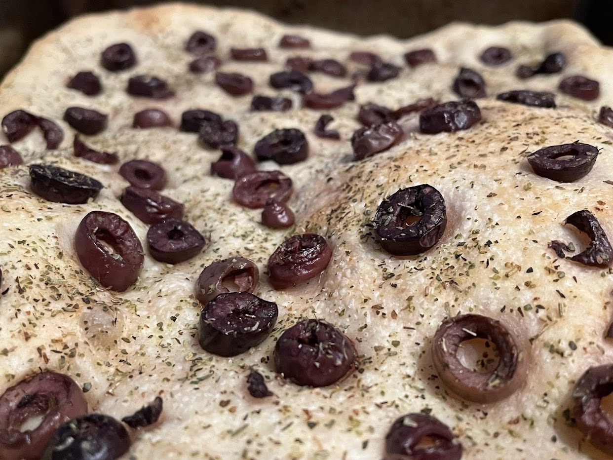
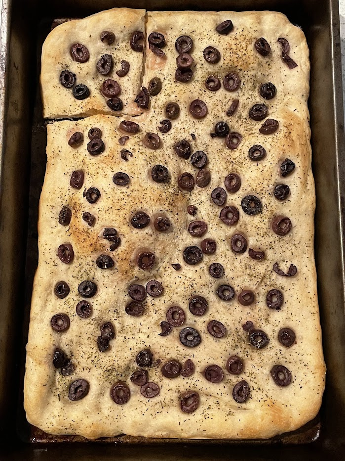

Olive bread
Serving size: Makes one thin piece of bread filling a 9" by 13" baking sheet.
What you would see if you were an olive slice. In real life, the bread looks a bit more golden, with tiny white blisters.

Olive bread made with halved Kalamata olives

Zucchini, leeks, onions, and tomato, cooked with butter and garlic and spices, served alongside fresh olive bread. The slimy veggies pair very well with the crisp and salty olive bread.
Olive bread made with sliced Kalamata olives
Ingredients
- 1 cup water
- 1 packet (2 tsp) active dry yeast
- More than 2 tbsp olive oil
- More than 2 cups flour
- Italian seasoning mix (or oregano)
- Kalamata olives, pitted and either sliced or halved
- A bit of rosemary (optional)
- Coarse salt to taste, but don't use too much
Instructions
Mix water, yeast, olive oil, and flour to form dough. Add additional flour as needed, and knead until soft and slightly sticky. Let that rise for several hours. Consider punching down the dough and letting it rise a second time, or leaving it in the fridge for up to a day, because the longer your dough sits, the softer and more flavorful the bread will be.
Preheat oven to 500°F. Pour a teaspoon or so of olive oil on a baking seet and use that to coat your dough, and spread the dough flat on the baking sheet. Sprinkle the rest of the ingredients on top, then throw it in the oven until it looks done, which will be 12-15 minutes. It should be just starting to get golden brown, and have a texture crisper than regular bread, but softer than a cracker.
Serving suggestion
Eat as soon as it comes out of the oven, and serve with vegetables.